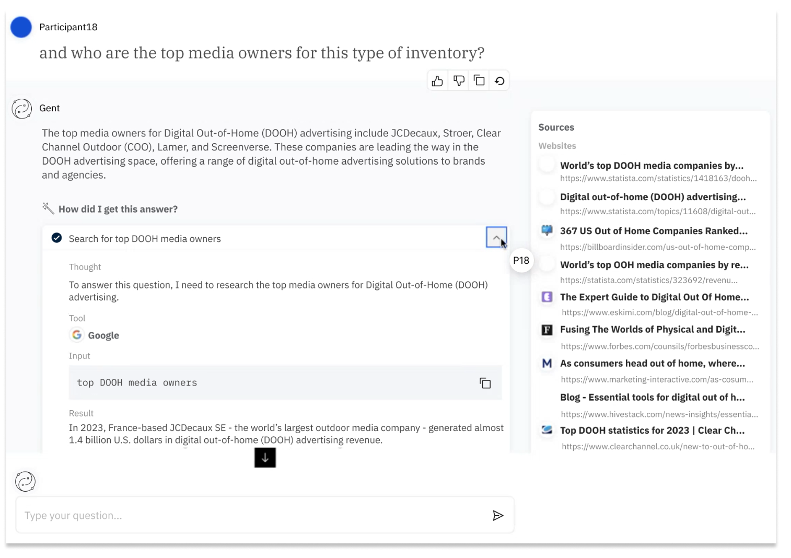
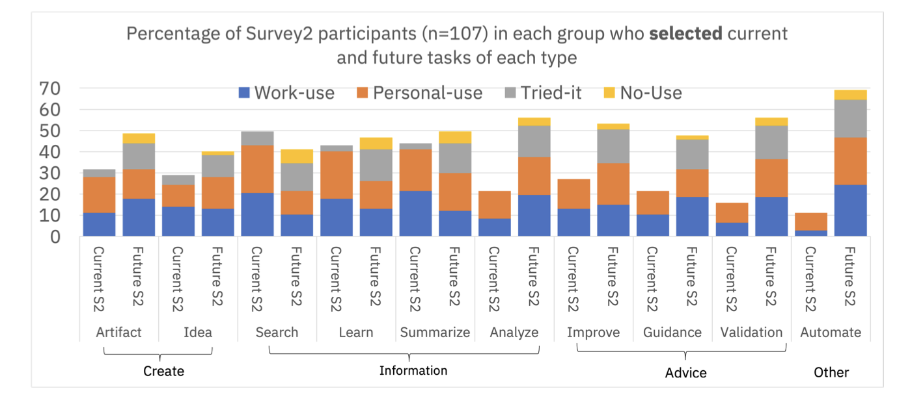
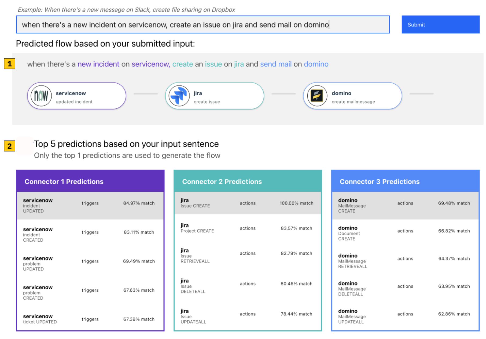
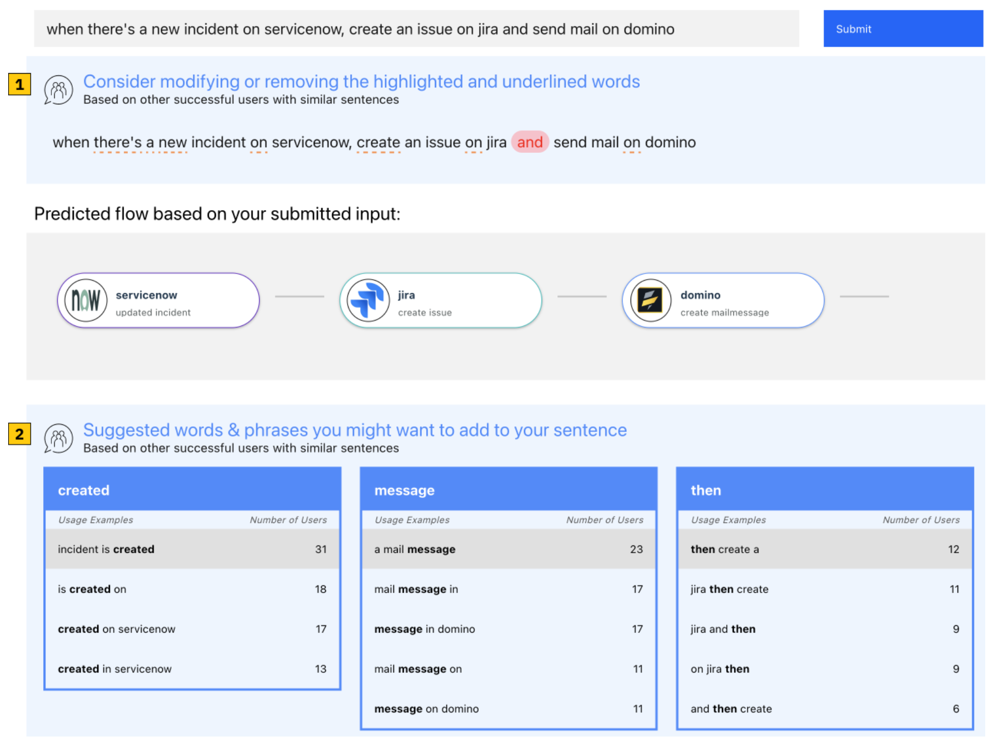

Michelle (Ichinco) Brachman, PhD
Summary
 I am an experienced human-computer interaction (HCI) researcher who loves to use qualitative and quantitative methods. I like to understand how people think, learn, and work, design interfaces to improve their experiences, and evaluate those experiences using qualitative and quantitative methods. My goal has been to better understand how people learn about and effectively work with complex and sociotechnical systems. I gain insight into user needs, mental models, perspectives, and workflows using methods like interviews, surveys, and think-aloud studies. I design and prototype systems based on discovered user needs. I evaluate systems through user studies, interviews, and surveys, gathering data such as how people use systems, their cognitive load, trust, and their ability to effectively evaluate the accuracy of AI systems. Throughout my research, I leverage theoretical frameworks, such as cognitive load theory and sensemaking theories, to reason about how people understand and use complex systems.
I am an experienced human-computer interaction (HCI) researcher who loves to use qualitative and quantitative methods. I like to understand how people think, learn, and work, design interfaces to improve their experiences, and evaluate those experiences using qualitative and quantitative methods. My goal has been to better understand how people learn about and effectively work with complex and sociotechnical systems. I gain insight into user needs, mental models, perspectives, and workflows using methods like interviews, surveys, and think-aloud studies. I design and prototype systems based on discovered user needs. I evaluate systems through user studies, interviews, and surveys, gathering data such as how people use systems, their cognitive load, trust, and their ability to effectively evaluate the accuracy of AI systems. Throughout my research, I leverage theoretical frameworks, such as cognitive load theory and sensemaking theories, to reason about how people understand and use complex systems.
My work at IBM Research for the past five years has centered around human-centered, trustworthy, and responsible AI for business users and developers and the future of work. I focused on enabling appropriate trust in AI systems and the impact of generative AI on technical and non-technical workers. As a tenure-track Assistant Professor of Computer Science at UMass Lowell for two years, I led a lab of graduate and undergraduate students researching programmer needs around learning APIs (Application Programming Interfaces). Together, my research over the past seven years has addressed the needs of two main user groups, business users and programmers, in accomplishing their work using complex, sociotechnical tools.
Research Interests: human-centered AI, responsible AI, AI developer experience, future-of-work, developer/end-user programmer experience, mental models and learning with complex systems.
Projects
Improving transparency and appropriate trust of an agentic AI

Goal: Understand the kinds of information users need to be able to correctly evaluate the accuracy of an agentic AI system's responses.
Methods: Task-based think-aloud user study with 24 participants interacting with an agentic AI chatbot and semi-structured interviews.
Findings: Users often put too much trust into an AI system. They are easily misled by the amount of information available (such as a list of sources). Many users do want to know about the agentic AI's capabilities, limitations, and decision-making processes.
Impact: Influenced the early design of the end-user interface for BeeAI, an open-source platform to build agentic AI systems which won a Fast Company Innovation by Design Honorable Mention.
Discovering current and future generative AI needs of business users

Goal: Learn how knowledge workers in an enterprise context use LLMs, how they would like to use them in the future, challenges in using them, and reasons for lack of use.
Methods: Survey of 216 knowledge workers and follow-up survey with 107 participants.
Findings: We found four key types of use: creating, finding information, getting advice, and automation. Users initially focused on creating content, like drafts of documents or emails. The second survey revealed that use of LLMs was increasing for information-focused tasks like searching and learning. Workers still hoped for more AI support in getting feedback on their work, analysis, and automating tasks. Workers also wanted to use AI for more complex tasks that require domain knowledge and context, but often did not feel that the existing systems were capable in those areas (as of the time the surveys were run).
Impact: Our findings were presented and shared broadly within IBM, informing product and innovation teams and strategy. This work inspired future projects, such as an AI tool for agile epic evaluation, aimed at improving product management workflows. We published this work at ACM CSCW and ACM CHI. It was also featured in Undark Magazine.
Supporting Product Management Workflows with AI
Goal: Understand the challenges and needs of product managers during agile epic creation and when using AI to support agile epic evaluation.
Methods: User study and interviews with 17 product managers.
Findings: Participants found value in an AI system for helping them evaluate and prioritize agile epics. However, this kind of system should provide felixibility to support diverse practices and could help organizations be more consistent in their agile practices. Lack of domain knowledge and context are also challenges for AI systems in this space.
Impact: The findings and tool were distributed broadly internally. We also published a case study at CHIWORK, which won Best Paper.
Enabling end-users to generate automation flows using transparency and explanation


Goal: Understand how explanations can help end-users create correct automation flows using a natural language to automation system.
Methods: Between-subjects user study of creating automation flows with several variations of explanations or without explanations on Amazon Mechanical Turk (252 participants).
Findings: Providing suggestions of terms to add to an utterance based on others users' inputs helpedusers to repair and generate correct flows more than system-focused explanations.
Impact: Findings were integrated into the design of IBM's AppConnect AI-powered natural language to automation product.
Publications
View and access my full publication history on Google Scholar.
Selected Publications and Patents:
2025
Michelle Brachman, Amina El-Ashry, Casey Dugan, Werner Geyer.
Current and Future Use of Large Language Models for Knowledge Work.
Proceedings of the ACM on Human-Computer Interaction (CSCW).
Michelle Brachman, Siya Kunde, Sarah Miller, Ana Fucs, Samantha Dempsey, Jamie Jabbour, Werner Geyer.
Building Appropriate Mental Models: What Users Know and Want to Know about an Agentic AI Chatbot.
Proceedings of the 30th International Conference on Intelligent User Interfaces.
Michelle Brachman, Arielle Goldberg, Andrew Anderson, Stephanie Houde, Michael Muller, Justin D Weisz.
Towards Personalized and Contextualized Code Explanations.
Adjunct Proceedings of the 33rd ACM Conference on User Modeling, Adaptation and Personalization
**Best Paper** Werner Geyer, Jessica He, Daita Sarkar, Michelle Brachman, Chris Hammond, Jennifer Heins, Zahra Ashktorab, Carlos Rosemberg, Charlie Hill
A Case Study Investigating the Role of Generative AI in Quality Evaluations of Epics in Agile Software Development.
Proceedings of the 4th Annual Symposium on Human-Computer Interaction for Work
2024
Michelle Brachman, Amina El-Ashry, Casey Dugan, Werner Geyer.
How Knowledge Workers Use and Want to Use LLMs in an Enterprise Context.
Extended Abstracts of the CHI Conference on Human Factors in Computing Systems
2023
Michelle Brachman, Qian Pan, Hyo Jin Do, Casey Dugan, Arunima Chaudhary, J Johnson, Priyanshu Rai, Tathagata Chakraborti, Thomas Gschwind, Jim A Laredo, Christoph Miksovic Czasch, Paolo Scotton, Kartik Talamadupula, Gegi Thomas.
Follow the Successful Herd: Towards Explanations for Improved Use and Mental Models of Natural Language Systems.
Proceedings of the 30th International Conference on Intelligent User Interfaces
2022
Michelle Brachman, Zahra Ashktorab, Michael Desmond, Evelyn Duesterwald, Casey Dugan, Narendra Nath Joshi, Qian Pan, Aabhas Sharma.
Reliance and Automation for Human-AI Collaborative Data Labeling Conflict Resolution.
Proceedings of the ACM on Human-Computer Interaction (CSCW)
2020
**Best Paper** Gao Gao, Finn Voichick, Michelle Ichinco, and Caitlin Kelleher. Exploring Programmers' API Learning Processes: Collecting Web Resources as External Memory. 2020 IEEE Symposium on Visual Languages and Human-Centric Computing (VL/HCC), Dunedin, New Zealand, 2020, pp. 1-10.
2019
Michelle Ichinco and Caitlin Kelleher. Open-Ended Novice Programming Behaviors and their Implications for Supporting Learning . 2019 IEEE Symposium on Visual Languages and Human-Centric Computing (VL/HCC), pp 45-53.
Caitlin Kelleher and Michelle Ichinco. Towards a Model of API Learning . 2019 IEEE Symposium on Visual Languages and Human-Centric Computing (VL/HCC), pp 163 - 168.
2018
Michelle Ichinco and Caitlin Kelleher. Semi-automatic suggestion generation for young novice programmers in an open-ended context . Proceedings of the 17th ACM Conference on Interaction Design and Children
pp 405-412.
2017
Michelle Ichinco, Wint Hnin, and Caitlin Kelleher. Suggesting API Usage to Novice Programmers with the Example Guru Proceedings of the 2017 CHI Conference on Human Factors in Computing Systems, pp 1105-1117.
Michelle Ichinco and Caitlin Kelleher. Towards Better Code Snippets: Exploring How Code Snippet Recall Differs with Programming Experience IEEE Symposium on Visual Languages and Human-Centric Computing (VL/HCC), pp 37-41.
**Best Paper** Wint Hnin, Michelle Ichinco, and Caitlin Kelleher. An Exploratory Study of the Usage of Different Educational Resources in the Wild. IEEE Symposium on Visual Languages and Human-Centric Computing (VL/HCC), pp 181-189.